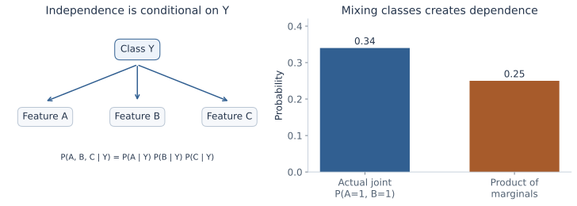
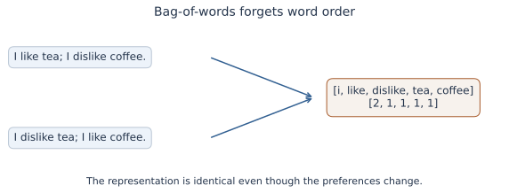
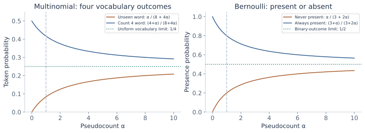
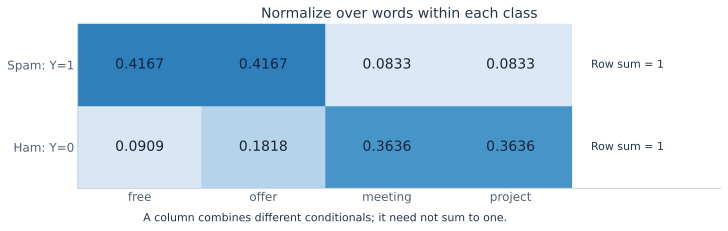
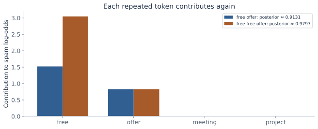
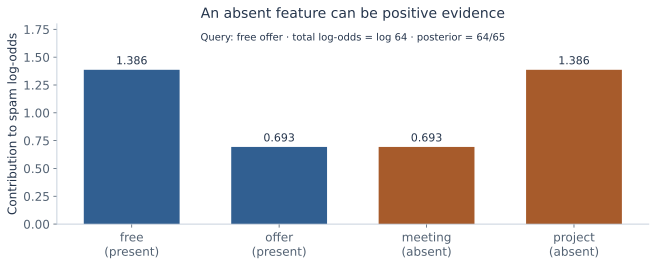
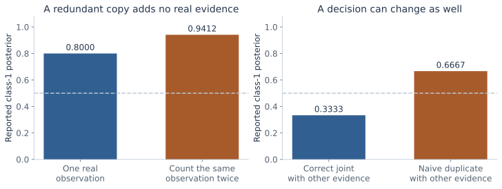

Naive Bayes,
from words to evidence
Build a text classifier from counts. Derive its probabilities, understand smoothing, and see how words—and sometimes their absence—change a prediction.
The Gaussian classification chapter fitted class priors and feature distributions, then used Bayes' rule. Naive Bayes keeps that generative route while changing the feature model. Instead of learning a full covariance, it factorizes a class-conditional distribution into simpler pieces.
The lecture's examples are spam filtering, sentiment labels, and document topics. Its handwritten derivations move from word sequences to categorical counts, smoothing, multiple classes, n-grams, and binary presence features. We will keep those event models distinct: a token count and a present/absent indicator require different likelihoods and different denominators. The factor-model/PCA material that follows is the next chapter.
What you should be able to do afterward
- Derive the Naive Bayes factorization from the probability chain rule and a conditional-independence assumption.
- Represent text as a sequence, a count vector, or a binary presence vector, and state what each loses.
- Derive categorical word estimates under a sum-to-one constraint and identify the correct direction of conditioning.
- Explain zero likelihoods and derive additive smoothing with a denominator matching the event space.
- Fit multinomial and Bernoulli models to a complete small corpus and normalize their log scores into posteriors.
- Extend to multiple classes, count parameters correctly, and explain linear scores, n-grams, and dependence failures.
Reading route: sections 1–6 build the count model and its estimates; sections 7–9 work through fitting and prediction. Sections 10–12 develop and compare the binary-presence model. Sections 13–16 connect the models to multiple classes, text processing, computation, and their limitations.
Contents · choose a section
1. The same Bayes rule, a different feature model
Lecture connection: document classification applications and the generative model p(document|class).
A training example is a document Dᵢ with class label yᵢ. The document may be an email, review, or news article. Let the possible classes be 0,…,K−1 and their prior probabilities be π₀,…,\(\pi_{K-1}\). Priors sum to one. For a new document representation x:
The numerator is a class prior times the likelihood of the document's features within that class. To choose the most likely class under equal error costs, compare these numerators. To report a posterior probability, divide by their sum. This is the same distinction used for Gaussian discriminant analysis.
The word “naive” identifies a modeling assumption, not an additional version of Bayes' theorem. The theorem is exact; the class-conditional feature model may be an approximation. We first learn parameters from labeled documents, then hold them fixed while comparing candidate labels. Maximizing over labels for prediction is different from maximizing over model parameters during fitting.
2. Derive the factorization, and name the assumption
Lecture connection: the chain-rule expansion over successive words and the removal of dependence on earlier words.
For any feature vector F=(F₁,…,Fᵣ), the probability chain rule gives:
Naive Bayes replaces each factor by p(fⱼ|c), assuming that the features are mutually independent conditional on the class. It therefore models:
This is stronger than merely checking pairwise correlations. It is also not a claim that features are independent before the class is known. A shared class can explain why two features often appear together in the whole dataset.

To check that example, average the two within-class products: P(A=1,B=1)=0.5×0.2²+0.5×0.8²=0.34. Each marginal is 0.5, so their product is 0.25. There is no contradiction: the independence statement had Y in its conditioning set.
For the token model below, the independent objects are word draws at successive positions, conditional on the class and document length. For the Bernoulli model later, the independent objects are vocabulary-level presence indicators. The names of the random variables matter; the two assumptions produce different distributions.
3. What is a document represented by?
Lecture connection: dictionary size, word-order example, repeated-word counts, and binary-vector generalization.
A vocabulary is a fixed list of V retained token types, indexed j=1,…,V. A token is one occurrence; a type is an entry such as “offer.” The sequence “free offer free” has three tokens but two distinct types. Let Lᵢ be its retained length and xᵢⱼ the number of occurrences of vocabulary word j. Then ∑ⱼxᵢⱼ=Lᵢ.
A bag-of-words count vector keeps those counts and discards order. A binary presence vector sets bᵢⱼ=1 when xᵢⱼ>0 and zero otherwise. It also discards repetition: “free offer” and “free free offer” have different count vectors but the same binary vector.

Use N for the number of training documents, \(N_c\) for the number in class c, \(n_{cj}\) for all occurrences of word j across that class, and \(T_c\)=∑ⱼ\(n_{cj}\) for its total retained tokens. For binary features, use \(d_{cj}\) for the number of class-c documents containing word j. These counts have different units: \(d_{cj}\)≤\(N_c\), while \(n_{cj}\) can be much larger than \(N_c\).
Keep an event ledger: ask what one trial produces. A token draw selects one of V vocabulary outcomes. A presence trial asks whether one specific word occurs in one document and has two outcomes. A class-prior trial selects one of K labels. The appropriate denominator follows from that choice.
4. From categorical word draws to a multinomial document
Lecture connection: word probabilities pⱼ and qⱼ, their sum-to-one constraints, and the product over word positions.
Define \(\theta_{cj}=P(W=j\mid Y=c)\): the probability of vocabulary word j in a token draw from class c. Each class has its own categorical distribution:
A categorical distribution chooses exactly one of V outcomes per draw. For a length-L word sequence w₁,…,wL, the model treats positions as independent draws from the same class-specific distribution. Thus:
Grouping repeated words changes a long product into powers of their counts. The equality explains why order is lost. For a full count-vector probability conditional on L, include the number of sequences producing that vector:
The coefficient counts permutations of the multiset. It is essential if asking for the probability of a count vector, but it is the same for all candidate classes for one observed document. It therefore cancels from class comparisons and posterior normalization. The multinomial theorem verifies normalization: summing these probabilities over all count vectors of length L gives (∑ⱼ\(\theta_{cj}\))ᴸ=1.
At fixed L the count coordinates themselves are not independent: increasing one leaves fewer tokens for the others. The multinomial model comes from the conditionally independent token draws, not independent unconstrained count coordinates. This distinction resolves an apparent tension between the Naive Bayes name and the constraint ∑xⱼ=L.
Here the length mechanism is treated as common across classes, so it adds no class-specific factor. If document length is modeled as informative about the label, p(L|c) must also enter the class score. Conditioning on an observed length does not automatically justify dropping a class-dependent length model.
5. Derive the word estimates under their constraint
Lecture connection: grouped corpus likelihood, the crossed-out complement substitution, and the constrained derivative.
Assume training documents are independent with common class-specific parameters. Ignoring count-vector coefficients that do not depend on those parameters, the conditional word likelihood groups into:
Each class can be fitted separately, but within a class its V probabilities must sum to one. Optimizing each \(\theta_{cj}\) as if unrelated would ignore the categorical model. Introduce one Lagrange multiplier \(\lambda_c\) to enforce that class's constraint:
The multiplier makes the stationary gradient balance along the allowed probability surface. For an interior estimate, differentiating gives \(n_{cj}\)/\(\theta_{cj}\)−\(\lambda_c\)=0. Hence \(\theta_{cj}\)=\(n_{cj}\)/\(\lambda_c\). Summing over j identifies \(\lambda_c\)=\(T_c\), giving:
The log objective is concave on the simplex: a positive-count coordinate has second derivative −\(n_{cj}\)/\(\theta_{cj}\)². Thus the constrained solution is a maximum. If \(T_c\)>0 but a word's count is zero, its unsmoothed MLE lies at zero on the boundary; the interior derivative should be read with that boundary case included. Use the likelihood convention that zero observations of an event contribute no factor, rather than evaluating 0×log0 naively. If \(T_c\)=0, the word data do not identify that class's token distribution at all.
The handwritten derivation instead eliminates the final coordinate. Write \(\theta_{cV}=1-\sum_{j<V}\theta_{cj}\). For a positive-count interior solution, differentiating with respect to a remaining coordinate gives \(n_{cj}/\theta_{cj}-n_{cV}/\theta_{cV}=0\). All count-to-probability ratios are therefore equal; normalization makes their common value \(T_c\). This recovers the same estimate. Zero counts require the boundary argument above rather than division by zero.
The lecture's complement trap
In binary classification, the slides call the spam word probabilities pⱼ and the non-spam probabilities qⱼ. These are θ₁ⱼ and θ₀ⱼ, two separate vocabulary distributions. In general qⱼ≠1−pⱼ. The complement of P(W=j|Y=1) is P(W≠j|Y=1), still within class 1; it is not P(W=j|Y=0).
Substituting qⱼ=1−pⱼ creates the crossed-out estimator n₁ⱼ/(n₁ⱼ+n₀ⱼ). Its denominator pools opposite classes for one word, rather than pooling vocabulary words within one class. That ratio describes the class composition of the observed occurrences of that word. It is not the token likelihood θ₁ⱼ being fitted here. The constraint resolves which direction of conditioning is intended.
Estimate class priors from documents
The joint likelihood adds \(\prod_c\pi_c^{N_c}\), with \(\sum_c\pi_c=1\). The same constrained calculation gives \(\hat\pi_c=N_c/N\). Count documents for a document's class prior; count tokens for its class-specific vocabulary distribution. Longer documents contribute more token observations without becoming extra labeled documents.
6. Zero probabilities and additive smoothing
Lecture connection: Laplace smoothing and the denominator annotation.
An unseen word in a class receives zero probability under unsmoothed maximum likelihood. If it occurs in a new document, one zero factor makes that class's entire likelihood zero. If every class assigns the document zero likelihood, Bayes normalization is undefined. A later logarithm does not repair zero support; log0 is −∞.
Add a pseudocount α>0 to every vocabulary outcome and normalize again:
α=1 is Laplace, or add-one, smoothing. Adding α to V counts adds Vα to the total. The denominator is not \(T_c\)+2α merely because there are two document classes. Summing the proposed probabilities is a quick check: using V=4,\(T_c\)=8,α=1 but denominator 10 would give total mass 12/10=1.2. The correctly normalized denominator is 12.
Smoothing raises unseen and sufficiently rare probabilities while reducing sufficiently common ones. As α grows with fixed counts, the whole vocabulary distribution approaches uniform 1/V. It is not a rule that every probability increases. The count estimates in a class with \(T_c\)=0 become uniform for α>0; that is pseudocount information, not evidence supplied by observed tokens.

What fitting criterion changed?
The smoothed estimate is not the original unsmoothed MLE. It can be obtained by maximizing ∑ⱼ(\(n_{cj}\)+α)log\(\theta_{cj}\) under the same constraint, using the earlier multiplier calculation with augmented counts. This penalizes probabilities approaching zero. α is a hyperparameter; choosing it uses training/validation procedures rather than changing counts after seeing test labels.
Optional Bayesian interpretation: a prior is a distribution over the unknown probability vector, different from the class prior \(\pi_c\). A Dirichlet distribution lives on the probability simplex; its density is proportional to \(\prod_j\theta_j^{\alpha-1}\) in the symmetric case. Multiplying by the count likelihood adds counts to those exponents. A symmetric Dirichlet prior with parameter α on each vocabulary outcome has posterior mean (\(n_{cj}\)+α)/(\(T_c\)+Vα). The posterior mode under that same prior uses α−1, subject to interior-mode conditions. The add-α estimate instead equals an interior posterior mode under a symmetric Dirichlet(α+1) prior. Thus “Laplace smoothing is MAP under a uniform prior” confuses posterior mean and mode: the uniform Dirichlet(1) prior has the unsmoothed MLE as its mode estimate.
The lecture's crossed-out and annotated expressions are best checked by naming the event space, identifying the conditioning class, and summing the probabilities. This gives an unambiguous smoothing formula even when shorthand reuses symbols for vocabulary size and class count.
7. Explore the normalization and smoothing
This sandbox has its own aggregate token counts for two classes and four words. Edit counts or α, then check each class's probability sum. It illustrates multinomial estimation; the later document classifier fits the separate six-document corpus printed with it.
Token-count estimation workbench
| Class | free | offer | meeting | project | Token total |
|---|---|---|---|---|---|
| Spam | |||||
| Ham |
Use nonnegative integer token counts up to 1,000 and α in [0,5]. α=0 selects unsmoothed maximum likelihood when a class has a positive token total. A zero-total class at α=0 has an unidentified token distribution.
8. Fit a complete small document corpus
The following documents and labels are invented for transparent counting. Use the fixed vocabulary [free, offer, meeting, project], lowercase tokens, and no stop-word removal. “Ham” denotes non-spam.
| Document | Class | Text | Length |
|---|---|---|---|
| S1 | Spam, 1 | free offer free | 3 |
| S2 | Spam, 1 | offer free | 2 |
| S3 | Spam, 1 | free offer offer | 3 |
| H1 | Ham, 0 | meeting project | 2 |
| H2 | Ham, 0 | project meeting meeting | 3 |
| H3 | Ham, 0 | project offer | 2 |
There are three documents per class, so the empirical document priors are π₁=π₀=1/2. Spam token counts are [4,4,0,0], with T₁=8. Ham token counts are [0,1,3,3], with T₀=7. Under add-one smoothing:
The two rows separately sum to one. The free column sums to 5/12+1/11≈0.5076; there is no requirement that it sum to one across classes. It consists of two probabilities conditioned on different labels.

Without smoothing, the spam probability of offer is 4/8=1/2. The fraction of all training offer occurrences found in spam is 4/(4+1)=4/5. These are different empirical questions. Sampling a token uniformly from the entire corpus would also use token-level class proportions 8/15 and 7/15, different from the document priors 1/2 and 1/2.
9. Classify with token counts and stable log scores
For the query “free offer,” the retained count vector is [1,1,0,0]. The ordered-token likelihoods are (5/12)²=25/144 for spam and (1/11)(2/11)=2/121 for ham. Multiplying by the document priors gives class scores 25/288 and 1/121. Normalize:
For the count-vector probability, the multinomial coefficient is 2!/(1!1!)=2. Both scores would be multiplied by 2, leaving that posterior unchanged. Do not call the ordered-sequence likelihood the full count-vector probability while omitting its coefficient.
Multiply probabilities by adding logarithms
Dropping zero-count terms avoids evaluating 0×log0 in an unsmoothed model. Subtract \(M=\max_c s_c\) before exponentiating: \(P(Y=c\mid x)=\exp(s_c-M)/\sum_k\exp(s_k-M)\). This is log-sum-exp normalization. It preserves class comparisons while avoiding underflow from multiplying many small probabilities.
If one class score is −∞ and another is finite, the former has posterior zero. If all class scores are −∞, the normalizing denominator is zero and the posterior is undefined. Adding an arbitrary tiny constant only after the product is not the same model as fitting smoothed word probabilities.
Explain the evidence using a log ratio
For positive word probabilities, a word with likelihood ratio greater than one adds evidence toward spam; a ratio below one adds evidence toward ham. Equal probabilities give zero contribution. With equal priors here, free contributes log(55/12)≈1.52243 and offer contributes log(55/24)≈0.82928. Their sum is about 2.35171; the spam posterior is the sigmoid of that log-odds.

A vocabulary word absent from the query has no explicit absent-word factor in this count likelihood. Its learned probability still participates in the vocabulary normalization. At retained length zero, the empty token product is one for every class, so this model returns the class priors.
10. A different model: word presence and absence
Lecture connection: the binary-vector generalization and its pᵇ(1−p)¹⁻ᵇ likelihood.
For each vocabulary type, define Bⱼ=1 when it appears at least once and zero otherwise. Let \(\rho_{cj}=P(B_j=1\mid Y=c)\). A Bernoulli Naive Bayes model assumes these binary variables are conditionally independent:
Every vocabulary entry contributes, including absent ones. This is a normalized distribution over 2ⱽ binary vectors: summing each binary coordinate contributes \(\rho_{cj}\)+(1−\(\rho_{cj}\))=1. The probabilities \(\rho_{cj}\) do not need to sum to one across words, because different words can all be present in the same document.
The exponent 1−bⱼ belongs to a binary indicator. Substituting a raw count such as 3 would produce a negative exponent and would not be this Bernoulli model. The lecture labels the binary representation as another version; keep it separate from its earlier count notation.
Derive its estimates from document-presence counts
For a fixed word j and class c, let \(d_{cj}\) count class-c documents containing the word. Its log-likelihood is \(d_{cj}\)log\(\rho_{cj}\)+(\(N_c\)−\(d_{cj}\))log(1−\(\rho_{cj}\)). Differentiating gives \(d_{cj}\)/\(\rho_{cj}\)−(\(N_c\)−\(d_{cj}\))/(1−\(\rho_{cj}\))=0, so:
The smoothed formula adds α to both outcomes: present and absent. That explains the 2α denominator; it has nothing to do with how many class labels or vocabulary words there are. If a word occurs ten times in one document, that document supplies one presence observation for that word, not ten. When \(d_{cj}\) is 0 or \(N_c\), the unsmoothed maximum is at a boundary and can again give zero document likelihoods.
The unsmoothed presence estimate requires \(N_c>0\); without any documents in a class, its presence probabilities are unidentified from data. Within a class, different \(\rho_{cj}\) parameters can be fitted independently because each models a different binary feature. The complement 1−\(\rho_{cj}\) is now meaningful: it is the absence probability for that same word within that same class. It is still not the presence probability in another class.
11. Fit and compare the binary model on the same corpus
The six documents from section 8 have spam presence counts [3,3,0,0] and ham presence counts [0,1,2,3]. Each class contains three documents. Add-one smoothing gives:
For “free offer,” the binary vector is [1,1,0,0]. Its spam likelihood is (4/5)(4/5)(4/5)(4/5)=256/625: the last two factors are the probabilities of meeting and project being absent. Its ham likelihood is (1/5)(2/5)(2/5)(1/5)=4/625. Equal priors cancel in the ratio, giving:
That differs from the count-model posterior 3025/3313, because the likelihood model and fitted quantities differ. “Free free offer” gives the same binary vector and the same Bernoulli posterior. A model comparison requires fitting each representation on the training documents; merely changing the prediction formula while keeping the other model's parameters would be inconsistent.

An all-zero binary vector can also carry evidence. Here its likelihoods are (1/5)(1/5)(4/5)(4/5)=16/625 in spam and (4/5)(3/5)(2/5)(1/5)=24/625 in ham. Its spam posterior is 16/(16+24)=0.4. By comparison, a zero-length multinomial token vector returns the document prior 0.5 under the stated length convention.
12. Trace a document through both classifiers
This workbench fits the printed six-document corpus. Choose token counts or binary presence, edit α, and inspect the class likelihoods, posterior, and per-word evidence. The editable prior starts at the corpus estimate 1/2; changing it holds the word models fixed while exploring a different assumed class mixture.
Document classification workbench
| Word | Count | Present? | Spam parameter | Ham parameter | Log-odds contribution |
|---|
On a small screen, scroll the evidence chart horizontally for its labels and values.
Text stays in this page. This teaching tokenizer lowercases ASCII letters, splits at other characters, and retains only free, offer, meeting, and project. Ignored tokens are listed. α stays in [0,5] and the prior in [0.05,0.95]. Ties go to spam. The count sandbox above has its own independent inputs.
The zero-support example uses “meeting free” with α=0. Each class then contains an impossible observed feature under its unsmoothed estimate, so both likelihoods are zero. Set α to 1 to restore finite likelihoods for this fixed vocabulary. The chart reports when a finite log-odds decomposition is unavailable rather than drawing infinite bars as finite values.
13. Multiple classes, parameter counts, and linear scores
Lecture connection: the multiclass annotation; the normalization direction determines the parameter count.
Count the probabilities that actually belong to the model
For K classes and V vocabulary types, the multinomial model has K categorical word distributions, each with V−1 independent numbers. Priors contribute K−1 more. Thus:
Bernoulli NB has V unrestricted binary-feature probabilities per class, plus priors, giving KV+(K−1). For K=3,V=4, those totals are 11 and 14. These count free parameters, not the number of stored array cells.
The lecture's multiclass line writes a sum across classes and a corresponding V(K−1)-type count. That normalization would describe probabilities P(Y=c|W=j) for each fixed word. With the class-conditional definition \(\theta_{cj}\)=P(W=j|Y=c) used here, the required sum runs over words within each class. V(K−1) alone therefore does not count this generative model's parameters. Defining the conditional direction first prevents treating posterior tables as likelihood tables.
Prediction remains a normalized class-score comparison
For any number of classes, compute \(s_c\)=log\(\pi_c\)+∑ⱼxⱼlog\(\theta_{cj}\) in the multinomial model, then normalize all K scores with log-sum-exp. Do not fit independent binary posteriors and assume they automatically sum to one across mutually exclusive labels.
For positive word probabilities, the binary log ratio is an affine function of counts: Δ(x)=b+∑ⱼwⱼxⱼ, with b=log(π₁/π₀) and wⱼ=log(θ₁ⱼ/θ₀ⱼ). The equal-cost boundary is Δ=0. Pairwise multiclass score equalities are also affine in this representation. This is a boundary in count-feature space, not a statement that word order or meaning is linear.
The Bernoulli score is affine too, with a different intercept
Expand the binary-presence log ratio into a term for an all-zero vector plus an adjustment for each present word:
This finite rearrangement requires all relevant presence probabilities strictly between zero and one. The intercept retains absent-word evidence. In the fitted example, a=log(2/3); the free and offer coefficients are log16 and log6. For their presence vector, Δ=log(2/3)+log16+log6=log64. The sigmoid again gives 64/65. An affine sigmoid form does not make these generative estimates identical to a logistic-regression conditional-likelihood fit.
14. Vocabulary choices, n-grams, and unknown words
Lecture connection: dictionary construction, stop words, bigrams and trigrams.
The vocabulary and tokenization define the observed variables. Lowercasing merges “Free” and “free”; punctuation rules determine whether strings split or remain together. Removing frequent stop words changes the representation, but is not automatically harmless: discarding “not” can destroy a sentiment distinction. Apply a chosen rule consistently to training and new documents.
A bigram feature records adjacent pairs such as “like tea”; a trigram records adjacent triples. The preference sentences in section 3 have the same unigram counts but different bigram counts. An n-gram model can therefore retain some local order. It still does not reconstruct every long-range dependency, and overlapping n-grams are often dependent even conditional on a label.
Replacing unigrams with bigrams changes the vocabulary and its size V; combining them creates a larger feature vocabulary. Recompute counts, totals, and smoothing denominators for the actual feature set. A larger vocabulary can introduce more sparsity and more pseudocount mass Vα, so α and representation choices interact.
Unknown at prediction time is not the same as unseen in one class
An in-vocabulary word with zero training count in one class can receive a positive smoothed probability. A string absent from the entire fitted vocabulary has no parameter unless the model defines an unknown-token outcome. Options include ignoring that string under the chosen projection or mapping it to an UNK category that was included when constructing and normalizing the model. Adding a new vocabulary entry at prediction time changes V and invalidates the old probability normalization.
The teaching workbench ignores unknown tokens and displays them. An unknown-only message therefore maps to an empty retained count vector or an all-zero presence vector. Those yield different results under the two fitted models, as section 11 showed. Such a result describes the retained representation, not evidence that the unknown text's meaning was understood.
Fit the vocabulary and any learned feature-selection rules using training data. Choose representation and smoothing settings on appropriate validation splits. Using held-out test documents to build a label-informed vocabulary or tune α contaminates the evaluation. Learned feature transformations belong inside the training folds used for cross-validation.
15. What can go wrong when evidence is dependent?
Explanation of the independence approximation and word-order example; the numerical counterexamples below are supplementary.
The model can still rank classes usefully when its probability assumptions are imperfect, but no theorem here guarantees that for an arbitrary dataset. A confident number from a fitted formula is not automatically a well-calibrated probability on real documents. Correlated phrases, duplicated features, or a shifted class mixture can change that interpretation.
A duplicate observation is not a second independent observation
With equal priors, suppose one observed binary event A=1 has class-1 probability 0.8 and class-0 probability 0.2. Its likelihood ratio is 4 and the posterior is 4/5=0.8. If A′ is an exact copy of A, observing both supplies no new information: the correct joint ratio remains 4. A naive product treating them as independent instead gives 4²=16 and posterior 16/17≈0.9412.
Dependence can affect the selected class as well as confidence. Suppose another feature B, independent of A within each class, has P(B=1|Y=1)=0.1 and P(B=1|Y=0)=0.8. For A=B=1, the correct ratio is 4×(1/8)=1/2 and the posterior is 1/3. Counting the exact copy A′ as independent gives 16×(1/8)=2 and posterior 2/3, reversing the equal-cost decision.

Check classification and probability quality separately on data reflecting the intended task. Appropriate error measures depend on the class balance and decision costs. A different posterior threshold changes a decision rule; it does not by itself repair a misspecified likelihood or calibrate its probabilities. The previous chapter's threshold derivation applies once a posterior is specified.
16. Computation and connections to other models
Training the multinomial model needs document-class counts and class-word token counts. For a fixed vocabulary, accumulation is linear in the number of retained token occurrences; storing dense word parameters requires O(KV) space. Count-based prediction can sum only the nonzero query features, taking O(Ks) score work for s distinct retained types, plus class normalization. Vocabulary lookup and tokenization have their own costs.
A direct Bernoulli score uses all V presence/absence terms, costing O(KV) per document. With probabilities strictly inside (0,1), precompute each class's all-absent baseline ∑ⱼlog(1−\(\rho_{cj}\)), then add log(\(\rho_{cj}\)/(1−\(\rho_{cj}\))) only for present words. This yields the same score with sparse query work. Ignoring absent features without putting them in the baseline would change the model.
Connection to continuous features: the same conditional factorization can use a scalar Gaussian for each real-valued feature instead of token or Bernoulli probabilities. Gaussian Naive Bayes then has a diagonal within-class covariance; separate classes may have different variances. This is an optional link back to Gaussian classification, not a claim that the text count likelihood is Gaussian or that conditional independence requires the same distribution family for every task.
Connection to weighted text vectors: an affine count score can also be evaluated on nonnegative fractional feature weights. That numerical operation does not make those weights literal integer token counts in a multinomial probability mass function. Keep the representation, fitting procedure, and probabilistic interpretation aligned.
The next lectures move in another direction: factor models and PCA describe shared low-dimensional structure behind dependent features. Their Gaussian and covariance prerequisites are already linked in the covariance foundations. They will be developed as a separate chapter, with the continuation of the current slide deck retained there.
17. Practice: choose the event before the formula
These are original problems for these notes. State the representation, count units, and conditioning direction before calculating. Where a probability is zero, reason about support instead of trying to hide an infinity in the arithmetic.
1 · Token, type, count, or presence?
With vocabulary [free,offer,meeting,project], represent “free free offer.” How many tokens and distinct types does it have? What happens if the words are reordered?
Solution and reasoning
The count vector is [2,1,0,0], the presence vector is [1,1,0,0], and there are three tokens but two distinct types. Reordering preserves both representations. The original sequence changes, but these two feature maps discard that order.
2 · Independence after conditioning
Use the equally likely two-class example from section 2. Verify P(A=1,B=1) and explain why it differs from P(A=1)P(B=1).
Solution and reasoning
The joint is (0.2²+0.8²)/2=0.34. Both marginals are 0.5, so their product is 0.25. The features were assumed independent given the class, not after averaging over the unknown class.
3 · Restore the multinomial coefficient
Under the fitted spam word probabilities, find the probability of the ordered sequence “free free offer,” then the probability of its count vector conditional on length three.
Hint
There are three positions in which the single offer can appear.
Solution and reasoning
The sequence probability is (5/12)³=125/1728. The count vector has coefficient 3!/(2!1!)=3, giving 375/1728=125/576. The coefficient changes the probability, but cancels across class labels for that same observed vector.
4 · Find the wrong conditioning direction
Offer occurs four times in spam and once in ham. Spam has eight total tokens. Compare 4/8 and 4/(4+1). Which is the unsmoothed spam word likelihood?
Solution and reasoning
The word likelihood P(W=offer|Y=spam) is 4/8=1/2. The ratio 4/5 describes the spam share among the observed offer occurrences. Its denominator conditions on a word rather than on a class. Neither implies the opposite-class word probability is the complement of 1/2.
5 · Catch a smoothing denominator by summing
Add one to counts [4,4,0,0]. Someone divides by 8+2 because there are two classes. What sum results, and what denominator is required?
Solution and reasoning
The new counts sum to 5+5+1+1=12. Dividing by 10 gives total probability 1.2. There are four token outcomes, so the correct denominator is 8+4=12. The two class labels do not determine this categorical vocabulary denominator.
6 · Match a denominator to a binary trial
A word appears ten times in one of three class-c documents, and never in the other two. Find its add-one Bernoulli presence estimate. Why is 11/5 invalid?
Solution and reasoning
There is one document presence, so the estimate is (1+1)/(3+2)=2/5. Ten token occurrences are not ten presence trials. Substituting 10 for the presence count gives 11/5, which cannot be a probability.
7 · Normalize the count-model prediction
Derive the spam posterior for “free offer” from the six-document corpus with add-one smoothing and equal priors.
Solution and reasoning
The ordered-token likelihoods are 25/144 and 2/121. With priors 1/2, the scores are 25/288 and 1/121. Normalization gives 3025/3313≈0.913070. If using the count-vector masses, the common factor 2 cancels from that ratio.
8 · Repeat a token without changing its parameter
How does adding a second free token change the multinomial log-odds? Does the class word distribution get fitted again?
Solution and reasoning
It adds log((5/12)/(1/11))=log(55/12) to the old log-odds. The fitted distribution remains fixed. The posterior becomes 166375/169831≈0.979650 for “free free offer.” Repeating a query word changes evidence, not training counts.
9 · Both class likelihoods vanish
Set α=0 and classify “meeting free” using the count model. What happens to posterior normalization?
Solution and reasoning
Spam assigns meeting probability zero; ham assigns free probability zero. Both document likelihoods are zero, so the denominator is zero and no posterior is defined under this fitted model. Positive smoothing on the fixed vocabulary repairs this support problem; taking logarithms alone does not.
10 · Empty retained representations
With α=1 and equal priors, compare the count-model prediction for an empty retained token sequence with the Bernoulli prediction for an all-zero vector.
Solution and reasoning
The empty token product is one in each class, giving spam probability 1/2. The Bernoulli model scores all four absent features, with likelihoods 16/625 and 24/625. Its spam posterior is 16/40=0.4. These are different likelihood models.
11 · Include all four Bernoulli factors
Derive the Bernoulli posterior for “free offer” in the fitted example. What happens for “free free offer”?
Solution and reasoning
The spam likelihood is (4/5)⁴=256/625. The ham likelihood is (1/5)(2/5)(2/5)(1/5)=4/625. With equal priors, the spam posterior is 64/65. Repetition leaves the presence vector unchanged, so the posterior stays the same.
12 · Explain an absent word's sign
For the previous binary query, compute the contribution of absent project to spam log-odds and explain its sign.
Solution and reasoning
It is log((1−1/5)/(1−4/5))=log4>0. Project's absence is more probable in spam than ham under the fitted model. Absence need not always penalize a class; its sign depends on the two class probabilities being compared.
13 · Recover the Bernoulli affine score
Use the example's all-absent intercept and its free/offer coefficients to recover the log-odds for their joint presence.
Solution and reasoning
The intercept is log(2/3). The two presence adjustments are log16 and log6, so their sum is log64. The sigmoid of log64 is 64/(1+64)=64/65. Dropping the intercept would discard the absent-feature baseline.
14 · Count free parameters
For three classes and four vocabulary words, count the multinomial word parameters and priors. Repeat for Bernoulli NB.
Solution and reasoning
The multinomial model has 3×(4−1)=9 word parameters and 3−1=2 priors, totaling 11. Bernoulli has 3×4=12 binary-feature parameters plus two priors, totaling 14. Bernoulli probabilities do not sum to one across words.
15 · Reserve an unknown-token outcome
Before fitting, extend the four-word vocabulary with UNK, which has zero training count in the spam corpus. With α=1, find its probability and the new free probability.
Solution and reasoning
The vocabulary has five outcomes and the token total is still eight. UNK gets 1/(8+5)=1/13 and free gets 5/13. Keeping the old four-word probabilities while appending an extra positive UNK probability would not preserve normalization.
16 · Document priors versus token proportions
Use unsmoothed word probabilities to classify the one-token document “offer” with equal document priors. Why does the answer differ from the raw token-class fraction 4/5?
Hint
Use likelihoods 4/8 and 1/7, then apply the specified priors.
Solution and reasoning
The posterior is (1/2)/(1/2+1/7)=7/9. The corpus token-class fraction 4/5 instead corresponds to sampling from all token occurrences, whose class proportions are 8/15 and 7/15. Different sampling units and priors produce different conditionals.
17 · A duplicate can reverse the decision
Use the likelihood ratios 4 for A=1 and 1/8 for B=1, with equal priors. Compare the correct posterior with one that treats an exact copy A′=A as independent.
Solution and reasoning
The correct ratio is 4/8=1/2, giving posterior 1/3 and class 0. The naive duplicate ratio is 4²/8=2, giving posterior 2/3 and class 1. The copy adds no information in the true model; the changed independence assumption causes the reversal.
18 · Sparse scoring without losing absence
How can Bernoulli NB score only present words during a query while retaining exactly the full presence/absence likelihood?
Solution and reasoning
Precompute log\(\pi_c\)+∑ⱼlog(1−\(\rho_{cj}\)). For each present word, add log(\(\rho_{cj}\)/(1−\(\rho_{cj}\))). This replaces its absence term with its presence term. The finite rearrangement requires 0<\(\rho_{cj}\)<1; omitting the baseline would change the model.
18. Explain the model in an interview
“What exactly is naive about Naive Bayes?”
The model factorizes feature likelihoods conditional on a class. Bayes' theorem itself remains exact. For multinomial text NB, the token-draw model produces a count distribution; for Bernoulli NB, vocabulary presence indicators are factorized. Independence before conditioning is not required.
“What is the difference between multinomial and Bernoulli text models?”
The first fits probabilities of token types from token counts and weights log probabilities by query counts. The second fits probabilities of word presence from document counts, counts each presence once, and includes absent-word factors. They need separately fitted parameters and generally produce different posteriors.
“Why does Laplace smoothing add vocabulary size to the denominator?”
It adds one to each of V categorical outcome counts, so the total increases by V. For a binary presence feature, one is added to present and one to absent, so its denominator increases by two. Count outcomes in the probability being estimated, not the number of labels in the classifier.
“Are a word's probabilities in spam and ham complements?”
No. They condition on different classes and belong to separate vocabulary distributions. The complement of a spam word probability is the probability of a different word within spam. In the Bernoulli model, the complement is absence of the same feature within the same class.
“Is add-one smoothing just maximum likelihood?”
It changes the original unsmoothed estimate by adding pseudocounts. It can be viewed as a posterior mean under a uniform Dirichlet prior over a categorical probability vector. Calling it MAP under that same uniform prior confuses posterior mean and posterior mode.
“Why does Naive Bayes have a linear decision score?”
In the count model, the log ratio is a prior intercept plus counts times log word-likelihood ratios. In Bernoulli NB, expansion also gives an affine score, but its intercept includes absent-feature terms. The functional form does not imply the same fitting objective as logistic regression.
“Can a classifier's probabilities be wrong while its labels are useful?”
Yes. Classification depends on relative score ordering and a decision threshold, while probability quality depends on the whole normalized model. Correlated evidence can inflate confidence without changing a label, and can also change the label when other evidence competes. Evaluate both claims rather than assuming one from the other.
“What do you do with a word absent from training?”
State the vocabulary policy. A zero count within one class can be handled by smoothing a known vocabulary outcome. A completely unknown type requires an established projection rule, such as ignoring it or mapping to a reserved UNK outcome. Adding a new outcome without refitting normalization changes the model.
19. Revision: match the model, count, and denominator
| Quantity | Multinomial token model | Bernoulli presence model |
|---|---|---|
| Observed feature | Integer count xⱼ; ∑xⱼ=L | Binary bⱼ∈{0,1} |
| Training count | \(n_{cj}\): word occurrences in class c | \(d_{cj}\): class-c documents containing word j |
| Unsmoothed estimate | \(n_{cj}\)/\(T_c\) | \(d_{cj}\)/\(N_c\) |
| Add-α estimate | (\(n_{cj}\)+α)/(\(T_c\)+Vα) | (\(d_{cj}\)+α)/(\(N_c\)+2α) |
| Normalization | Sum over vocabulary words equals 1 within each class. | Present/absent probabilities sum to 1 for each word and class. |
| Query likelihood | \(\prod_j\theta_{cj}^{x_j}\) for a sequence; coefficient L!/∏xⱼ! for a count-vector mass. | \(\prod_j\rho_{cj}^{b_j}(1-\rho_{cj})^{1-b_j}\) |
| Absent vocabulary word | No explicit absent-word factor. | Contributes log(1−\(\rho_{cj}\)) to the log likelihood. |
| Repeated query token | Changes its count and score contribution. | No change after the first presence. |
| Parameters including priors | K(V−1)+(K−1) | KV+(K−1) |
For both models, document-prior MLEs use \(N_c\)/N. Posterior scores include the prior and normalize across classes. Use logs for numerical stability, but distinguish zero support from arithmetic underflow. Fit and evaluate the same vocabulary and event model.
Mastery checklist
Saved in this browser where local storage is available.
20. Sources and continuation
These personal notes expand Rahul Garg's Naive Bayes introduction (Lecture 26) and its continuation in the first part of Lecture 27, including handwritten count estimates, crossed-out alternatives, smoothing, multiple classes, n-grams, and binary features. The later factor-model and PCA material in the same slide deck is reserved for the following chapter, together with its next-lecture continuation.
The corpus, numerical calculations, figures, workbenches, practice problems, and interview explanations are original teaching additions. Sequence-versus-count-vector probabilities, document-length conventions, support cases, the optional prior interpretation of smoothing, affine-score derivations, and dependence counterexamples make the modeling choices explicit. Formula ambiguities in the handwritten notes are resolved by defining the random event, conditioning direction, and normalization constraint.
- Primary coverage: the supplied Naive Bayes lecture slides and annotations, through the transition into factor models.
- Andrew Ng: Generative Learning Algorithms — additional reading for Naive Bayes and text event models.
- Scikit-learn: Naive Bayes models — an implementation reference for the different event models and smoothing conventions. The teaching workbenches here are independent of that library.
Next: factor models and principal components, beginning with correlated features, a lower-dimensional latent representation, centering, reconstruction, and the continuation of the supplied examples.